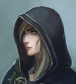

1. Тракт
|
DungeonMaster
Valkorolessandra
10.03.2024 23:09 |
 Дороги, тропы и тропинки, стекая с гор, к этим местам уже давно собрались в добротный тракт, ведущий к Крайбургу. До города оставалось чуть более двух дней пути, и еще два дня до места назначения. За спиной остался лихой подъем к перевалу со стороны Норты, когда вы, свежие и полные сил думали лишь о том, как бы, пройдя перевал, незаметно влиться в ряды путешественников, ничем не выдав вашего происхождения и цели путешествия. Позади долгий путь вдоль хребта, который вам посчастливилось пройти с караваном. С ним вы расстались в небольшом городке Сорз. Настолько небольшом, что городком его можно было назвать лишь благодаря преобладанию каменных домов над деревянными. Караван застрял там на несколько дней, для вас же такая задержка была непозволительной роскошью. Впрочем, там же, в Сорзе вы обрели новых попутчиков - группу охотников. С ними вы ехали несколько дней, до тех пор пока те не ушли за пушным зверем - вниз по реке, на запад. Охотники были людьми честными, крепкими, но простыми в обращении и вы слегка устали от их диковатых манер и бытовых привычек. Вы знаете, что примерно в дне пути от Крайбурга находится хороший, надежный постоялый двор и надеетесь там переночевать. Во второй половине дня вы нагоняете две телеги. Пока расстояние между вами медленно сокращается, вы, будучи профессионалами и просто наблюдательными людьми, успеваете подметить несколько деталей. Одна телега набита клетками с курами, вторая – мешками. В каждую запряжено по лошади, их ведут люди, со всей очевидностью являющиеся крестьянами, едущими в Крайбург, на рынок. Рядом с одной из телег едет хорошо вооруженный бронированный всадник - профессиональный воин благородного вида. Вряд ли он наемник. На телеге, набитой мешками, рядом с которой он едет, сидит пожилой монах. Они с рыцарем или знакомы, или просто давние попутчики, но явно непринужденно общаются и дружелюбно друг к другу относятся. За телегой топает привязанный к ней мул, видимо, принадлежащий монаху. При вашем приближении крестьяне явно напрягаются и с надеждой смотрят на воина. Тот с суровым, но не враждебным видом оглядывает вас с ног до головы: – Вечер добрый. |
|
Эрика Райт
legol
 11.03.2024 09:53 |
За время пути Эрика, похоже, знала уже всё про силки, выделанные шкурки пушных зверьков и вообще, про мелкую живность, что водилась в предгорных лесах Флавии. Она с любопытством слушала рассказы попутчиков, задавала вопросы, и ничем не выдавала того, как ей всё это на самом деле надоело. Когда охотники наконец-то свернули с дороги, девушка выдохнула с облегчением. Взглянула на небо, где парил верный Скай. Всё это время птица держалась подальше от шумной компании, чтобы не вызывать лишних вопросов.
- Почти добрались, - с усталой улыбкой обратилась она к Мартину. - Путешествовать с попутчиками лучше, чем без них. Но бывает утомительно, правда? Она подозвала птицу, по которой уже начала скучать. И когда ястреб приземлился ей на плечо, потрепала его за перья. - Дорога свободна, - вздохнула девушка. - Скорей бы до постоялого двора доехать. Как он, кстати, называется? Солнце клонилось к горизонту, когда впереди показались крестьянские телеги. - Новые попутчики, - усмехнулась Эрика. - И новые истории про пушнину. Или про производительность кур-наседок... - задумчиво добавила она, приглядевшись. - Нагоним их. Заметив рыцаря, девушка вопросительно взглянула на Мартина. Но уже в следующий миг пришпорила мула, догоняя процессию. - Добрый, - улыбнулась она незнакомому воину, приветливо кивнув и остальным его спутникам. От неё не скрылась встревоженность крестьян. Это показалось ей странным, ведь она с наёмником совсем не походили на разбойников. - Вы тоже в Крайбург? На рынок? - непринуждённо спросила Эрика, посмотрев на груженые телеги. - Никогда не видела столько кур сразу, - восторженно заметила она. - Красивые. Порода какая-то? Потом снова перевела взгляд на рыцаря: - Здесь где-то должен быть постоялый двор. Не знаете, далеко ли до него? Успеем до заката?
Результат броска 1D20: 16 - "Sence Motive"
Результат броска 1D20+5: 13 - "Search" Эрика задаёт непринуждённые вопросы и старается подмечать детали:
- есть ли у рыцаря знаки отличия? Гербы, эмблемы, что-то ещё, могущее выдать его род деятельности? - есть ли на виду у монаха символ веры? Он похож на последователя какой конфессии? - продолжают ли крестьяне волноваться или успокоились. Их Эрика вообще из виду не выпускает, наблюдая краем глаза. - оружие. Вооружён только рыцарь? Чем? - акцент. Флавийский? Нортийский? Предгорный? PS: Птица в небесах. Бдит. |
|
Мартин
msh
11.03.2024 20:40 |
Мартин тоже общался. Вот только разговоры у него были другие - если и караванщики и охотники в первую очередь пытались произвести впечатление на путешествующую девушку и поэтому темы подбирали соответствующие, то с ним мужики могли говорить на одном языке (и речь шла не о флавийском или нортийском наречии). Закалка оружия, преимущества доспехов, сравнение типов луков и как лучше устроить ловушку на медведя - вот что действительно интересно!
- Путешествовать с ними полезнее, - уточнил Мартин, - Попутчики - отличная маскировка, так меньше привлекаешь внимание... Воин посмотрел на ласкающую птицу Эрику. Один из путешествовавших с ними охотников заметил парившего в небе ястреба и предлагал пари - что собьет его с первого выстрела. Тогда Мартину удалось перевести разговор на другую тему.,но в следующий раз стрелок мог оказаться и понастойчивей. Пари охотник скорее всего проиграл бы, но кто знает, что было бы, реши остальные поучаствовать в забаве. - Согласно карте постоялый двор называется "Зеркало и василиск". Надеюсь, пьяных там будет не больше обычного... Размышления солдата о пользе и вреде пьяных драк прервали новые кандидаты в попутчики. На этот раз их было не так много - всего лишь две телеги и рыцарь. Именно он в первую очередь привлек внимание Мартина. - Добрый вечер, - в свою очередь поприветствовал рыцаря Мартин, еле сдержавшись, чтобы по привычке не гаркнуть "здравия желаю".
Результат броска 1D20+1: 4 - "Search".
Насколько опытным воякой выглядит рыцарь, качество оружия и доспехов, манера поведения... Ну и геральдика/ знаки различия , естественно, если есть.
Насколько легко переносит езду монах: бывалый путешественник или скорее книжный червь, выбравшийся наружу? Ну и что в мешках (судя по внешнему виду)? Сколько крестьян и насколько они опасны? |
|
DungeonMaster
Valkorolessandra
11.03.2024 22:34 |
- Вы тоже в Крайбург? На рынок?
– Агась, туда, – признались крестьяне. Стоило Эрике заговорить с ними, как они сразу расслабились, а обладатель "красивых кур" горделиво заулыбался. — Так ыть! Лучшие несушки! – Ой, да слухайте его… – Помолчи, Кудо, что ты понимаешь. В городе таких нет. Вот, еду, стал быть, улучшать породу. – Он хохотнул, довольный, и по-новому взглянул на своих подопечных. – Тебе просто завидно, никто твой овес красивым не называет. Владелец овса, названный Кудо, не мог такого вынести и поспешно сменил тему: – А вы, барышня, по делам, али для развлечения? Рыцарь наблюдал за этой беседой с отстраненной снисходительностью. А вскоре, окинув напоследок внимательным взглядом фигуру Мартина, потерял к попутчикам интерес, отвлекшись лишь чтобы ответить Эрике: – Все так, мадам. Два часа еще, если шагом. На его доспехе был выгравирован символ Святого Катберта, что не оставляло сомнения в принадлежности к доминирующему во Флавии ордену. Тот же знак красовался на щите. На вид рыцарю вряд ли можно было дать больше 25 лет, но, судя по выправке, солидную часть этого времени, он провел в седле, не расставаясь с привычно висящей у бедра булавой. Не вмешиваясь в разговор девушки с крестьянами, а, скорее, дистанцировавшись от него, паладин вернулся к тихой и неспешной беседе с сидящим на краю телеги монахом. Тот тоже уделил новым попутчикам толику внимания. Скорее ненавязчивого любопытства к мирскому. Зябко кутавшемуся в шерстяные одеяния мужчине, было, наверное, около шестидесяти. Его лицо было скрыто капюшоном, однако, когда при вашем приближении, он приветливо кивнул, вы успели убедиться в том, что оно наводило на мысли о доброте, кротости и ясном уме. Все как и положено священнику. Вы не успели заметить какого либо знака или святого символа, но, кажется, с четок, что пару раз мелькнули в руках старика, свисал тот же символ креста в двойном кольце. Поравнявшись с телегами, ваши мулы пошли шагом. Это позволило слегка расслабиться и осознать, как же вам надоело трястись по тракту. А с тех пор как горы остались позади, еще и взгляду стало не за что зацепиться. Погода потихоньку портилась – в спину вам дул ветер с гор, он же нес по небу облака, что с каждым часом становились все тяжелее. Тревожность крестьян, чем бы она ни была вызвана, отступила. Стало очевидно, что они неуютно чувствовали себя на этой дороге вдвоем и были рады присутствию рыцаря, возлагая на него надежды, как на защитника. Ну а когда к ним присоединился еще один воин, мужички и вовсе повеселели и уже начали припоминать, что подают в Василиске. И даже, что наливают. Рыцарь же вряд ли стал бы тратить свое время, плетясь со скоростью телеги, если бы не монах, для которого путешествие верхом явно было в тягость. Да и телега за перину не шла. Через несколько минут после вашего появления, монах извинился, сказав, что устал, и вытянулся на дне телеги, насколько позволяли мешки, а рыцарь поехал сзади, по центру дороги, в гордом одиночестве. Крестьян двое. Не вооружены (ну, может где палка в телеге лежит). Говорят на Морландском диалекте (предгорном), но не таком заковыристом, какого вы в верховьях наслушались.
Рыцарь профи, в полулатах, с булавой. Он и монах говорят на чистом Флафийском. Рыцарь явно состоит в ордене, персонального герба нет. Но, очевидно, что он дворянского рода. Поэтому, завязав разговор с крестьянами, вы и перестали быть ему интересны. Монах да, с трудом выносит путешествие. Верхом – явно не его случай. |
|
Эрика Райт
legol
12.03.2024 09:31 |
- По делам моего отца, - слегка фыркнула Эрика, как если бы её заставили говорить о работе во время праздной прогулки. - Джонатан Оулэнс. Слышали о нём? Так вот, я его дочь, - она широко улыбнулась, будто это всё объясняло. - Но и город я с удовольствием посмотрю. Вы бывали там прежде?
- Два часа? - девушка проводила взглядом отставшего рыцаря. Затем украдкой глянула на Мартина, сделав чуть заметный кивок в сторону законника и слегка улыбнувшись. Ей не нравилось, что служитель святого Катберта держится особняком. Рыцарь явно был опасен для них. И завязать с ним знакомство было бы не лишним. Но сама Эрика уже упустила шанс, взявшись за крестьян. Потому надеялась, что Мартин немного сгладит ситуацию - двум воинам всегда есть о чём поговорить. Затем она продолжила, обращаясь к оставшимся деревенским и монаху: - Успеем тогда. Не против, если вам компанию составим? А то вместе оно как-то спокойней. Девушка бросила взгляд на деревья по обе стороны дороги. - Вы друзья? - тихо спросила она, кивнув в сторону паладина. - Он выглядит так нелюдимо. Что-то случилось?
Результат броска 1D20: 5 - "SM"
|
|
Мартин
msh
12.03.2024 20:43 |
Пока Эрика общалась с крестьянами, Мартин решил попытаться поговорить с рыцарем:
- Сэр, разрешите обратиться. Часто здесь разбойники нападают? Крестьяне выглядят испуганными, - наемник кивнул в сторону телег, - Такое впечатление, что если бы не ваше присутствие, вообще бы из деревни носа бы не высунули. |
|
DungeonMaster
Valkorolessandra
12.03.2024 22:06 |
Джонатан Оулэнс. Слышали о нём?
– Не, не слыхали. Это ж отекль вы будете? – Кудо решился продолжить беседу, видимо, боялся возвращения к теме куриной красоты. – Хех, мы ж туда каженную осень ездим, в Крайбург-то. – Пояснил второй. - Успеем тогда. Не против, если вам компанию составим? А то вместе оно как-то спокойней. – Дак мы ток рады. – Куриный фермер понизил голос: – места-то тут лихие, что б они там себе ни думали. А с вами вона какой кавалер видный. Они с лыцарем враз всех порубают. – Типун те на язык, Фил, ну кого, кого тут рубать. Скоро уж доедем. Не слухайте его, госпожа. Тихо тут ужо, года два как тихо. Монах тем временем, не сумев устроиться на горе мешков, переполз на облучок и наблюдал за беседой. – Мы знакомы, да. – На вопрос Эрики он слегка улыбнулся, видимо, слово "друзья" не очень вязалось с их отношениями. Что и не удивительно, учитывая разницу в возрасте и, очевидно, образе жизни. – Боюсь, сэра Григора еще тяготят раны, полученные весной. – Ответил он девушке. – Ох уж эта погода, ничьим костям покою не дает… – Он с кряхтением выпрямил спину и попытался поудобнее устроиться на жесткой лавке. – Скорей бы уж доехать… Оулэнс вы сказали? Это ж… хм… Мирна*, осмелюсь предположить? Долгое путешествие. Даже представить не могу… и не хочу. Каждый раз, как приходится выезжать куда-то, такая морока. Но вам-то, молодым, должно быть интересно. Бывали уже тут? Рыцарь тем временем благосклонно отнесся к попыткам Мартина завязать разговор. Возможно, тому способствовал верно выбранный тон. – Уже не нападают. В этих землях действительно было неспокойно. – Он посмотрел наверх, прикидывая, – года полтора назад. Но после того как Его Величество отрядил сюда войска, вопрос был решен. А крестьяне… крестьяне всегда чего-нибудь боятся. Однако же судите сами, добрались сюда сами и никто их не тронул. Мы со святым отцом нагнали их сегодня около полудня. – Помолчав, он снова смерил наемника неторопливым взглядом, – из Норты, полагаю? До Крайсбурга или дальше? Вам понадобятся документы на въезде в город. *Мирна – столица Норты. Не похоже, чтобы монах был убийственно проницателен. Скорее просто назвал единственный город по ту сторону гор, который знает.
|
|
Мартин
msh
13.03.2024 22:06 |
- Да, где армия там порядок, - согласился Мартин. Хотя, конечно, в армии бардака тоже навалом, уж кому как не сержанту об этом не знать.
- Вы правы, из Норты, - не стал отрицать очевидного солдат, - Пока до Крайсбурга, а там как госпожа Оулэнс решит... Мартин пожал плечами, мол нанимателю виднее. - А с документами все в порядке. Имею контракт на сопровождение. - Часто здесь путешествуете? - поинтересовался Мартин. Потом подумал и решил уточнить, - Как думаете на постоялом дворе проблем со свободными комнатами не будет?
Результат броска 1D20+1: 5 - "Sense Motive"
|
|
Эрика Райт
legol
14.03.2024 01:41 |
- Скажете тоже, - смутилась Эрика на слова монаха про столицу. -Эсбург. Так что путешествие не такое уж и долгое, - улыбнулась она, ответив заодно и на вопрос крестьянина.
- Никогда прежде не бывала в Крайсбурге. Но надеюсь, город меня не разочарует, - с предвкушением заметила девушка. - Хотя после нескольких дней в пути, сдаётся мне, и придорожный "Василиск" покажется райским местом, - добавила она с усмешкой. - А вы откуда будете? И что заставило вас в путь отправиться? - вопрос девушки прозвучал сочувственно. - И я уже от седла устала. А Вам, должно быть, дорога совсем тяжело даётся. - Старые раны? - Эрика оглянулась на сэра Григора, отметив про себя, что Мартин уже завёл с ним разговор. - Разбойники?- уточнила она у монаха. - Я слышала, раньше их тут немало было. Но ведь два года как тихо уже, - она обернулась к крестьянину с мешками за поддержкой. |
|
DungeonMaster
Valkorolessandra
14.03.2024 09:41 |
– Контракт? Контракт – это хорошо. – Заметил рыцарь, хотя совершенно не понятно было, к чему это он и что тут хорошего. – Но здесь мы ваших коллег уже без работы оставили. А как по ту сторону гор? Востребованы услуги?
- Часто здесь путешествуете? – Бывает. По долгу службы… А в Василиске нынче пусто должно быть. Поздно уже, зима скоро. Крестьяне примолки, не решаясь вмешиваться в разговор девушки с монахом, и, поглядывая на небо, попытались как-то подогнать лошадей. – Ох, чую, польет нас… не успеем, – пробормотал Фил, понукая свою клячу. – Эсбург… Эсбург… Нет, не слышал. Мы едем от обители Белого Креста. – Святой отец кивнул на север. – Вы, если с той стороны на дорогу вышли, должно быть, проезжали поворот к нему несколько дней назад. Ну то есть это я еду, ох, очень мне вот это надо… Нда. А юный сэр любезно согласился сопровождать меня в этом долгом путешествии. Хотя, так посмотреть, не такое уж оно и долгое. Просто с каждым годом все дольше. На вопрос о разбойниках он лишь рукой махнул: – Да просто мерзавцы. Вечереет, дело к дождю.
Маякните, когда вас двигать дальше. Можно ускориться, отделившись от попутчиков, можно заявить неспешную болтовню и доехать с ними. |
|
Мартин
msh
14.03.2024 20:43 |
- В золоте не купаемся, но на хлеб хватает, - ответил Мартин. Впрочем рыцарь мог это заметить по его снаряжению - добротное, но без излишеств. Ни тебе золотой инкрустации, ни узоров на мече. Да взять хотя бы тот факт, что путешествовал он не на боевом коне, а на муле говорил о многом.
Да зима близко... Но дождь, судя по облакам, еще ближе. Тем не менее Мартин не стал ускоряться, чтобы успеть до дождя на постоялый двор. Не сахарный, не размокнет, а явиться в компании рыцаря и монаха и появиться сами по себе - это, как говорят торговцы, две большие разницы. |
|
Эрика Райт
legol
15.03.2024 02:11 |
Оказаться под проливным дождём Эрике совсем не хотелось. Но она знала, как сближают трудности в пути. Да и бросать новых знакомых ей казалось малодушным. По крайней мере, малодушным это будет выглядеть. Потому, смирившись с шансом вымокнуть до нитки, девушка поплотнее закуталась в плащ и продолжила праздную беседу с монахом о тяготах дорог и здоровье, стараясь больше расспрашивать и участливо слушать, чем что-то рассказывать.
Бросив взгляд на Мартина, девушка убедилась, что наёмник мыслит схожим образом. |
Для разгону можно побекплеить и посоциалить между собой.
При нежелании общаться с первыми встречными, на обращение рыцаря можно ответить приветствием и поехать дальше по своим делам. Можно притормозить и пообщаться.
Ваша скорость, очевидно, выше скорости телег. Впрочем, с очень большой вероятностью, вы еще встретитесь с этими людьми, ведь дорога тут одна и трактир один, а время к вечеру.